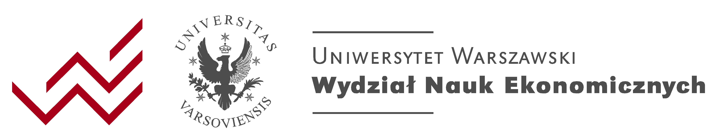

Ścieżka dla społeczności UW rozpocznie się 29 maja o godz. 14:00 panelem, podczas którego przedstawione zostaną postulaty studenckie opracowane dzień wcześniej. Debaty w tej części konferencji skupią się na przyszłości uczelni, strategiach rozwoju edukacji wyższej oraz praktycznych wyzwaniach związanych z wdrażaniem technologii AI na Uniwersytecie Warszawskim.
Innowacyjne nauczanie
Jak generatywna AI zmienia sposób nauczania i uczenia się.
Nowatorskie badania naukowe
Przełomowe zastosowania AI w nauce i badaniach.
Dobre praktyki
Inspirujące przykłady wdrożeń technologii na uczelniach.
Portal wiedzy
Tworzenie platformy wymiany doświadczeń między badaczami, firmami i dydaktykami.
Zachęcamy do zapoznania się z raportem zespołu DELab UW na temat generatywnej AI.
W raporcie prezentujemy zbiór dobrych praktyk opartych na przeglądzie literatury, wytycznych UW i innych uczelni, wynikach badania społeczności UW oraz doświadczeniu zespołu z narzędziami generatywnej AI.
👉 Przeczytaj raport
Program
środa 28.05
Wysłuchanie studenckie
Spotkanie prowadzone przez prof. Annę Gizę-Poleszczuk. Przestrzeń do refleksji i przedstawienia postulatów dotyczących AI w edukacji.
czwartek 29.05
Debata: Jakiej uczelni chcemy w obliczu rozwoju AI?
14:00 - 15:30Główna aula 0.410
Uczestnicy:
- Prowadzi: Dr hab. Katarzyna Śledziewska, prof. UW
- Prof. dr hab. Ewa Krogulec
- Prof. Anna Giza-Poleszczuk
- Prof. Janusz Uriasz – Przewodniczący PKA
Opis: W dobie dynamicznego rozwoju sztucznej inteligencji, pytanie „jakiej uczelni chcemy?” staje się jednym z najważniejszych wyzwań dla systemu szkolnictwa wyższego. Czy uczelnie powinny jedynie adaptować się do zmian technologicznych, czy aktywnie je współkształtować? Na czym powinna się opierać ich misja w świecie, w którym wiedza staje się natychmiast dostępna, a kompetencje zmieniają się szybciej niż programy kształcenia?
Debata otworzy refleksję nad tym:
- Jak zmieni się misja edukacyjna uczelni w ciągu 10 lat?
- Jaką funkcję społeczną i kulturową mają dziś pełnić uczelnie?
- Na jakich wartościach powinna być oparta ich tożsamość w erze generatywnej AI?
- Czego powinniśmy bronić, a co powinniśmy odważnie zmieniać?
- Czy uczelnie powinny pozostać strażnikami akademickiej autonomii, czy stać się liderami cyfrowych przemian?
Debata: Jakiej strategii potrzebują uczelnie w dobie AI? Od wizji do działania
16:00 - 17:00Główna aula 0.410
- Prowadzi: dr hab. Magdalena Słok-Wódkowska, prof. UW – Kierowniczka Pracowni Regulacyjnej DELab, Pełnomocniczka ds. równości WPiA
- prof. Ewa Krogulec – Prorektor ds. rozwoju UW
- Robert Grey – Kanclerz UW
- dr Zuzanna Hazubska – Pełnomocniczka Ministra ds. spójności polityki naukowej państwa, MNiSW
- dr Elżbieta Jaskulska – KJD Wydziału Archeologii, URK
Przedyskutowanie konkretnych kierunków i narzędzi strategicznych, które pozwolą uczelniom – w szczególności Uniwersytetowi Warszawskiemu – skutecznie odpowiedzieć na wyzwania i możliwości związane z AI.
Opis:
Jak przełożyć wizję nowoczesnej uczelni na konkretne działania? Ta debata skupi się na realnych możliwościach wdrażania strategii rozwoju w kontekście barier instytucjonalnych, konieczności współpracy międzysektorowej i wyzwań organizacyjnych.
Dyskusja obejmie m.in.:
- Jak pogodzić tempo zmian technologicznych z tempem zmian instytucjonalnych?
- Co jest realnie możliwe do wdrożenia na Uniwersytecie Warszawskim i innych uczelniach w najbliższych latach?
- Czy i na jakich warunkach warto wchodzić we współpracę z big techami?
- Jak tworzyć strategie, które uwzględniają różnorodność wydziałów, potrzeb i poziomów cyfryzacji?
- Stoiska partnerów: Dostępne przez cały czas trwania konferencji w atrium w miejscu konferencji
- Rejestracja: Przy wejściu do głównej sali
- Materiały konferencyjne: Dostępne w formie cyfrowej i drukowanej
- Live Streaming na kanale: https://www.youtube.com/@delab-uw
Szczegóły lokalizacji
Konferencja odbędzie się na Uniwersytecie Warszawskim, przy ul. Dobrej 55 w Warszawie. Nowoczesny budynek zapewnia doskonałe warunki i jest dogodnie zlokalizowany w pobliżu centrum miasta, co sprawia, że jest łatwo dostępny komunikacją miejską.